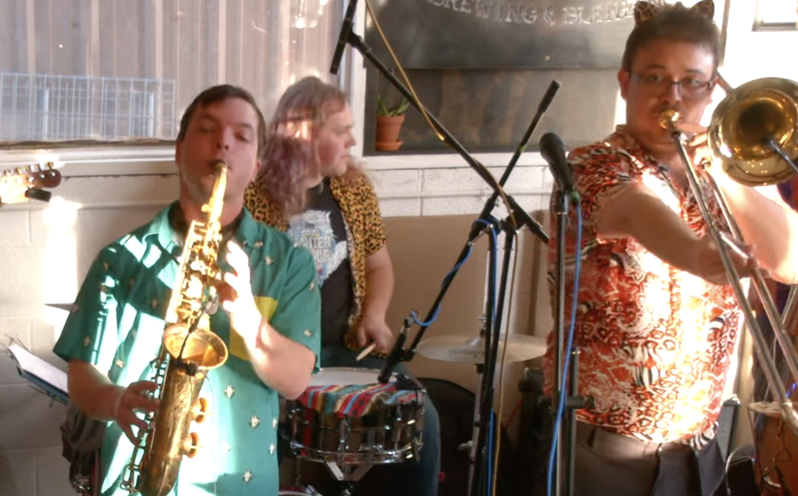
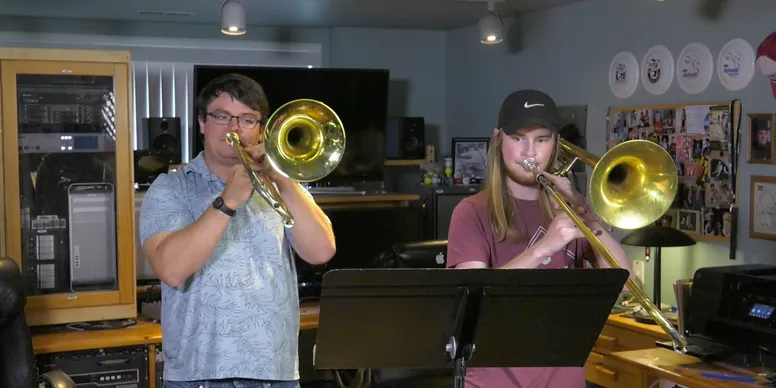
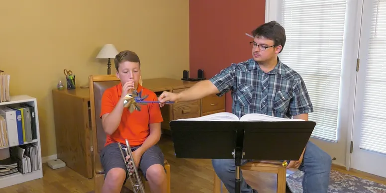

Why take lessons?
Lessons are the best way for music students to develop higher-level skills specific to their instrument: technique, phrasing and expression, ear training, music theory and literacy, study of advanced etudes and solo literature, efficient practice habits, and more. Any band or orchestra director will agree that students who master these individual skills in lessons will make faster progress and reach higher levels of performance in their ensembles. More advanced skills mean more long-term playing opportunities and, ultimately, greater musical fulfillment and enjoyment.
Lessons are available in-person in Arvada, Conifer, and Littleton; remote lessons are available for students anywhere. For rates, scheduling, and/or other questions, email me at jongauer@gmail.com
Testimonials

"One of the best things that a teacher can do for a student is be someone the student looks up to, who's a role model, and someone they get along with. Gauer does a great job of this."
-Casey Wilkes, music teacher, Denver, CO
"The personal relationships he builds are next-level. I've always seen a high level of success from all of his private lesson students."
-Eric Andress, band director, Dallas, TX

"He's very helpful, and thanks to his instruction I was awarded music scholarships that helped pay for my college education."
-Logan, former student
"I 100% would recommend Gauer to anybody who's looking to improve as a musician. He's really good with teaching exactly what you need to learn, and it's completely changed the way I play."
-Charlotte, former student

"He's a good teacher, a great guy, he's not too serious, he'll throw a few jokes into your lessons, and he makes the lesson days fun."
-Thomas, former student
"You'll never feel on-edge or nervous when you go into a lesson - you'll never feel more at ease with any other lesson teacher than you will with Gauer."
-Elvis, former student
Areas of instruction
- All brass instruments: trombone, euphonium, tuba, horn, and trumpet
- Masterclasses and chamber ensemble coaching
- Jazz improvisation
- Music theory & ear training
- Beginner to intermediate piano, guitar, and voice
- Large-ensemble guest conducting
My qualifications
- Experience teaching at all age levels, from beginners through college students and adults
- Pedagogical training under world-class music faculty at the University of North Texas
- Unique skills and perspectives gained from years of professional performance experience
- A track record for student successes, including:
- Finalists in professional symphony and military band auditions
- Professional careers in music education and freelance performance
- Releases of their own original albums
- Admission with scholarship to colleges of music including University of Northern Colorado, Colorado State University, University of Denver, University of Colorado-Boulder, Colorado Mesa University, Ohio State University, Eastman School of Music, Montana State University, Ithaca College, Texas Tech University, and University of North Texas
- Finalists in International Trombone Association and International Trumpet Guild competitions
- All-Northwest Concert Band, All-Northwest Jazz, Colorado All-State Concert Band, and Montana All-State Band
View my resume
If this sounds like what you're looking for in a lesson instructor, send me an email to find out more!
Contact